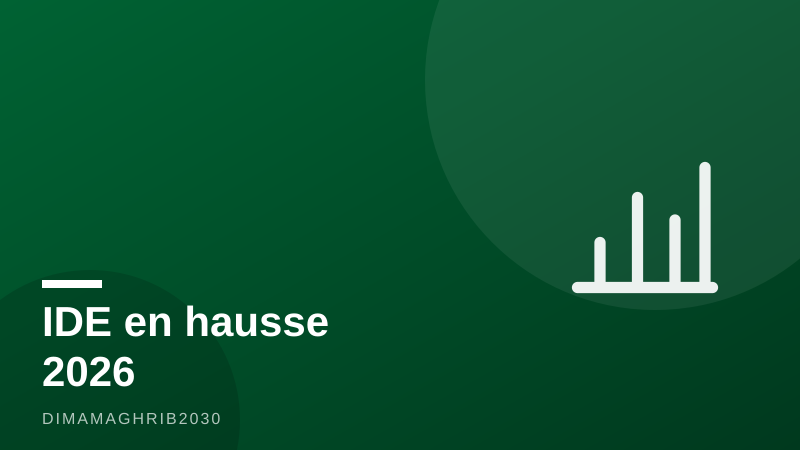

IDE en hausse de 41,8 % à fin mai : le Maroc confirme son statut de terre d'investissementFDI Up 41.8% Through May: Morocco Cements Its Status as an Investment Destination

Les chiffres tombent, et ils racontent tous la même histoire. À fin mai 2026, le flux net des investissements directs étrangers au Maroc s'est établi à 23,3 milliards de dirhams, en hausse de 41,8 % par rapport à la même période de 2025, selon les données de l'Office des Changes relayées par MCG24. Après le bond de 91 % enregistré sur l'année 2025 par la CNUCED, la dynamique ne ralentit pas : elle s'installe.
Une charte qui a changé la donne
Trois ans après l'entrée en vigueur de la nouvelle Charte de l'investissement, le bilan donne la mesure du chemin parcouru. Maroc Diplomatique rapporte un portefeuille de 391 conventions d'investissement représentant 520 milliards de dirhams — un pipeline de projets qui irrigue l'automobile, les énergies renouvelables, l'aéronautique, le dessalement et les infrastructures touristiques. Le dispositif, qui peut couvrir jusqu'à 30 % du coût d'un projet, a fait du royaume l'une des destinations les plus lisibles du continent pour les capitaux étrangers.
Des projets « stratégiques » qui montent en gamme
Début juillet, la Commission nationale des investissements réunie à Rabat sous la présidence du chef du gouvernement a par ailleurs attribué le caractère « stratégique » à trois projets totalisant près de 29 milliards de dirhams, porteurs de plus de 1 100 emplois directs, selon Africa24. Ce label, réservé aux investissements structurants, ouvre droit à un accompagnement renforcé de l'État — et confirme une montée en gamme : le Maroc n'attire plus seulement des usines d'assemblage, mais des maillons entiers de chaînes de valeur mondiales.
Champion africain de l'investissement vert
Cette trajectoire vaut au royaume d'être décrit par Le360 comme un champion africain de l'investissement vert et industriel, deuxième destination des IDE en Afrique du Nord selon la CNUCED. À quatre ans de la Coupe du Monde 2030, l'équation est devenue familière aux investisseurs : stabilité, énergie décarbonée compétitive, position logistique entre l'Europe, l'Afrique et l'Atlantique. Investir au Maroc en 2026 n'est plus un pari d'avant-garde ; c'est une tendance de fond que les chiffres de fin mai viennent, une fois encore, valider.
The numbers keep coming in, and they all tell the same story. By the end of May 2026, net foreign direct investment flows into Morocco reached 23.3 billion dirhams, up 41.8 percent on the same period of 2025, according to Office des Changes data reported by MCG24. After the 91 percent surge UNCTAD recorded for 2025 as a whole, the momentum is not slowing down — it is settling in.
A charter that changed the game
Three years after the new Investment Charter came into force, the balance sheet shows how far the country has come. Maroc Diplomatique reports a portfolio of 391 investment agreements worth 520 billion dirhams — a project pipeline feeding the automotive industry, renewable energy, aerospace, desalination and tourism infrastructure. The scheme, which can cover up to 30 percent of a project's cost, has made the kingdom one of the most predictable destinations on the continent for foreign capital.
"Strategic" projects moving up the value chain
In early July, the National Investment Commission, meeting in Rabat under the chairmanship of the head of government, also granted "strategic" status to three projects totalling nearly 29 billion dirhams, expected to create more than 1,100 direct jobs, according to Africa24. That label, reserved for structurally significant investments, unlocks enhanced state support — and confirms a qualitative shift: Morocco is no longer attracting mere assembly plants, but entire links of global value chains.
Africa's green investment champion
This trajectory has led Le360 to describe the kingdom as Africa's champion of green and industrial investment, and UNCTAD ranks it as North Africa's second-largest FDI destination. Four years out from the 2030 World Cup, the equation is now familiar to investors: stability, competitive low-carbon energy, and a logistics position bridging Europe, Africa and the Atlantic. Investing in Morocco in 2026 is no longer a frontier bet; it is a structural trend — one the end-May figures have just validated once again.